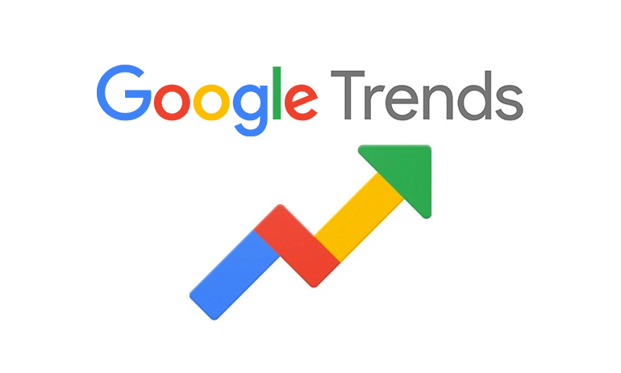
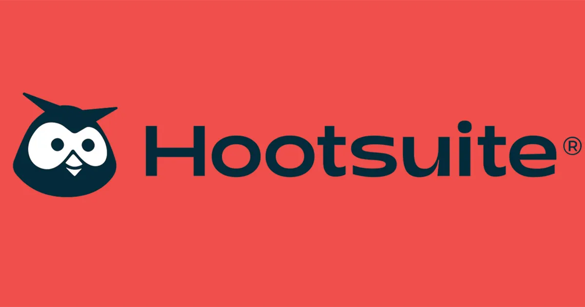

Phishing scams are scams where individuals impersonate certain people or companies in order to trick users into sharing sensitive information. This is dangerous for the company as phishers could gain access to company accounts and make inappropriate posts or even access financial information or client data. Only a select few specially trained personnel are authorized to access the company's social media accounts. These individuals are responsible for the social media content and messaging attributed to the company accounts. They will be trained to identify phishing scams and report them to the social media platform's administrators. As additional security, all company social media accounts will utilize two-factor authentication and will be required to update passwords every fiscal quarter. Additionally, no employee is authorized to share private company information such as passwords, client information, or banking details on any platform for any reason. Sharing any private company information is a violation of the terms of employment and will result in termination.
Personal Devices and Personal Social Media
In today's tech driven society most of, if not all employees will have their own personal devices such as mobile phones, laptops, and personal computers. Many employees will also have their own personal social media accounts. These personal devices hold sensitive information and can be used to harm the company if accessed by bad actors. If a personal device becomes compromised, it could be used to acccess sensitive company information or to access personal social media accounts and make inappropriate posts. Employees are representatives of the organization and as such, inappropriate social media activity can reflect poorly on the company. Employees should ensure that all of their devices are locked with passcode, fingerprint, or face recognition protection to minimize the risk of unauthorized access.
Company Systems
Company systems will be passcode protected with passcodes being updated every fiscal quarter. Each employee will have their own login credentials to access the systems. Employees must never share the passcode with anyone outside of the company. Additionally, no system should be left open and unattended. Employees should sign out of the system before walking away for any period of time. Any systems found logged in and unattended will result in a written warning for the employee logged in to the system. Further violations after receiving a written warning may result in eventual termination. Under special circumstances, employees may take company systems home with them. In these instances, the employee will be required to fill out a device sign out form with the IT department. When returning to work with the system, it must be submitted to IT for an inspection using monitoring software discussed in the next section.
Imposter Accounts
It is extremely easy for individuals to create fake accounts impersonating the company. Individuals may do this to tarnish the reputation of the organization. Using monitoring technology discussed in the next section, IT can detect any public posts related to the company, fake or not. These accounts should be reported to the social media platform's administrators as soon as possible. If an employee notices any suspicious accounts posting as the organization, they should report the activity to IT as soon as possible. Swift removal of imposter accounts from all social media platforms is critical in protecting the organization's reputation.
Third Party Apps and Websites
Downloading third-party applications and visiting inappropriate, non-work related web pages on company systems is not permitted. These websites and applications can infect company systems with spyware or malware which can compromise the organization's systems or even reveal login credentials allowing intruders to access the company's social media accounts. Monitoring software covered in the next section will alert the IT department if an employee attempts to download a third-party application or visit any inappropriate websites. Employees caught intentionally installing third party applications or visiting inappropriate websites can be subject to any form of discipline ranging from a written warning to termination depending on the severity of the incident.
Social Media Monitoring Tools

Image Source: mentionlytics
Google Alerts is a free web application that allows users to enter certain keywords and receive notifications every time they are used across the web. This is a useful tool in tracking users and topics of interest to the organization.
The company can utilize Alerts to track brand mentions on social media, follow media coverage, and track employee social media activity. The application can be extremely useful for being notified about attacks on brand reputation
immediately and before they can gain significant traction.
Visit Google Alerts to learn more

Image Source: Moving Traffic Media
Google Trends is a free web application that allows users to search keywords and analyze search traffic over set periods of time dating back to Google's inception. Trends offers a variety of search filters to narrow analysis such as worldwide,
by region, time period range, and language. The company can utilize Trends to analyze brand interest or monitor public sentiment. Company names can be combined with various keywords such as "controversy" or "fraud", to determine urgency
and relevance of social media attacks or bad media coverage. Google Trends can also help identify emerging threats before they become widespread. For example, a sudden spike in searches for terms like "phishing scam" might indicate a new wave
of phishing cyberattacks. By analyzing search trends, a company can detect patterns that suggest a rising threat and act quickly, allowing IT teams to update their security measures, push out patches, and train employees to avoid potential
threats.
Visit Google Trends to learn more

Image Source: AdWeek
Hootsuite is a comprehensive social media management and monitoring tool that allows users to monitor multiple social media accounts across various platforms in a single dashboard. Hootsuite provides real-time monitoring of brand
mentions, specific hashtags, or keywords across multiple platforms. Unlike Google Alerts, which focuses primarily on web results, Hootsuite tracks live social media interactions, allowing employees to engage directly with users and
address issues immediately.It offers detailed analytics and reporting features, which help companies gauge public sentiment and monitor traction for campaigns against company reputation in real time.
Visit Hootesuite Homepage to learn more
Employee Monitoring Tools

Image Source: Veriato
Insider Risk Management (IRM) is an application product offered by Veriato for monitoring employees while they use company systems. IRM can track keystrokes to ensure that company owned computers are not used for inappropriate means such as visiting inappropriate websites, sending threatening or offensive messages, installing malware, or leaking insider information. The application also utilizes AI, which monitors employees and assigns risk factor scores based on their actions and behaviors on company systems. Allowing the company to easily detect employees who are present the highest risk factor to security and productivity.
Image Source: Veriato
Another monitoring product by Veriato, User Activity Monitoring (UAM), monitors and reports employees' network activity in real time. The corporation can utilize UAM to flag inappropriate websites and applications, enabling it to send
alerts notifying management whenever a flagged URL or application is accessed on a company system. UAM has e-mail and chat monitoring capabilities, ensuring that if employees send messages that go against policy, management will be
made aware in real time. It also features file & document tracking, allowing security personel to see when files are created, edited, deleted, or renamed.
Visit Veriato UAM Homepage to learn more
Image Source: Teramind
In addition to including some of the features covered in the Veriato applications, such as keystroke logging, Teramind offers unique live session viewing and video recording. The company can check in on any of their systems live to ensure
that employees are being product and are not misusing the system. Screen recordings include time-stamps, allowing management to quickly navigate to the relevant moments leading up to, during, and after any security incident. Teramind also
includes optical character recognition, which detects unusually long view times of sensitive company content. This feature can help prevent security incidents by detecting suspicious activity early on.
Visit Teramind Homepage to learn more
Legal and Ethical Employee Monitoring
 Image Source: iStock
Image Source: iStock
The organization has a legal right to monitor employees during work hours at the workplace. By monitoring employees at work, the company can help ensure productivity and mitigate security risks. Company systems are considered company property and all activity on company systems can be monitored. Employees that bring home company systems will not be subjected to any live monitoring. However, upon return to the company headquarters the system can be investigated for any misuse by using digital forensics software such as keyloggers. All employees should use their personal devices for any and all personal communications to maintain their privacy. The company cannot legally monitor personal devices and communications. If the company suspects that an employee is using their personal device for illegal activities, they will need to bring any evidence gathered to the proper authorities who can obtain a search warrant if necessary. Employees should always be made aware that they are being monitored and how they are being monitored. When adopting new monitoring technology, the organization must clearly communicate with employees how the technology will be used and what data will be gathered.
All activity on company social media accounts is subject to monitoring and review by the company. Employees may have personal social media accounts where they can post their thoughts and opinions publicly. However, they should refrain from making posts that reflect poorly on the organization or overshare sensitive company and client information. Company management may monitor any public social media activity of employees as it is publicly available for anyone to see legally. Employees also have the right to create private social media accounts in which their posts are only visible to a select audience. In these instances, the company cannot not attempt to view the private posts without the employee's permission.
Sample Incident Response Plan
In cases of a system or account breach or virus attack, the IT department will need to utilize security software to identify the source of the issue and respond appropriately. Breaches and malware attacks put sensitive customer and company data at risk, so a network shutdown should be implemented immediately until the issue can be resolved. Account passwords must be updated immediately after access is regained.
In cases of a breach, IT will need to identify compromised data, recover any missing data, reset all passwords, and deal with any malware left behind by the attacker. Law Enforcement should be notified of breaches or malware attacks, and IT may need to comply with computer forensics agents to identify culprits and press charges if necessary. Everything that occurs during the incident and response needs to be documented. Analyzing the information can help in recognizing areas for improvement in the organization's security infrastructure. The integrity of the system security software should be tested regularly, at least twice a month, to ensure that customer and company data remains as secure as possible.
Development Personnel
Certain incidents will call for specialized incident response plans. As such, certain departments will need to be involved in developing response plans for particular incidents. The organization should strive to include a representative of law enforcement in development for security plans relating to criminal incidents, such as data breaches or phishing scams. Law enforcement can assist in developing these plans by providing insight into the procedures the company will need to comply with during a criminal investigation. Such insights are imperative in developing optimized security plans that effectively support investigative efforts. Customer Service and Marketing will need to be involved in developing plans for attacks on the company's reputation over social media. IT will detect threats and incidents, but it will fall on Customer Service and Marketing to communicate with the public in response to any incident. Customer Service should assist in developing clear guidelines on what can and cannot be discussed with clients, ensuring consistent and professional responses during incidents. Law enforcement representatives will be asked to participate in developing response plans involving criminal activity. In this way, law enforcement can provide expertise on how best to navigate criminal cases and collaborate in devising clear processes for criminal investigations, optimizing the chances of a conviction.
Technology and social media are ever-evolving aspects of life and business. As such, organizations must continually adapt to the constantly shifting technology landscape. As new technology is rolled out, IT should collaborate with Management and consider potential benefits and drawbacks for each department in incorporating it. It is crucial that policies are revisited and updated frequently to reflect any new technological developments. Any updates to policies and plans must coincide with the development of new training programs reflecting the changes.
Conducting regular audits is essential for ensuring compliance with company policies and identifying any potential gaps in security or operational procedures. Audits help maintain the integrity of the organization’s social media and acceptable use policies by verifying that all practices adhere to established guidelines. Additionally, audits can uncover vulnerabilities that need to be addressed, thereby strengthening overall security. Feedback mechanisms such as surveys are equally vital as they encourage employees to share their insights and experiences with the policies in place. By cultivating an environment where employees are encouraged to provide feedback, the company can continuously improve the policies to better meet the needs of both the organization and its staff.
Once the risks are identified and prioritized, the next step is to develop and implement mitigation strategies. Each high-priority risk should have a detailed action plan that outlines preventive measures, response outlines, and the departments responisble to act in the case of an incident. Regular monitoring and review processes are essential to ensure the effectiveness of mitigation strategies. This includes conducting regular audits to track progress and make necessary adjustments. Additionally, establishing clear communication channels and conducting regular training programs can help prepare the organization for potential threats, ensuring a coordinated response. Different departments will be called on in response plans depending on the type of incident. Ensuring each department is trained and familiar with their responsibilities should an incident occur is critical in mitigating damage. Through continuous evaluation and improvement, the organization can maintain a proactive stance against risks.
Incident Response Plans and Disaster Recovery Plans will vary based on incident. It is crucial that all departments relevant to certain high priority risks be trained to respond appropriately. The organization should host routine Incident Response drills for the appropriate departments. Bringing in outside cybersecurity firms to conducts drills and testing can be an effective way to receive an unbiased perspective on department and overall organization preparedness. Continuous improvement through regular updates, scenario-based training, and clear communication protocols will ensure the organization is fully conditioned to address any social media threats effectively.